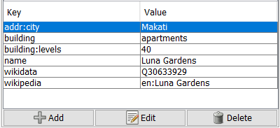
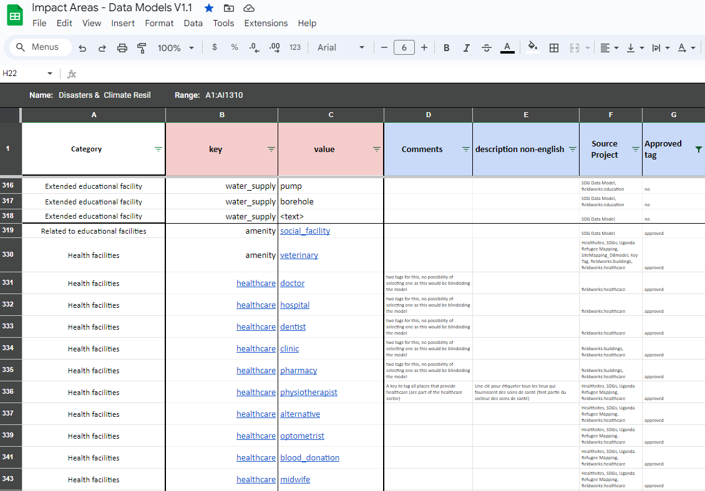

2.1 Designing the Data Model
Course Objectives
In this section you should be able to:
- Understand the concept of data structure in OSM
- Learn to use OSM wiki
- Learn to use TagInfo
- Understand the data model workflow
- Understand to create the data model
- Learn to use HOT data models
Learning Activities
When beginning a mapping project, a data model will need to be created in order to determine what features are mapped and the details collected for each of those features. A data model defines what features are surveyed or mapped and what attributes are collected for each feature. If a project will upload data to OpenStreetMap, the data model should be designed to match OSM tagging.
Introduction to Data Structure of OSM
OSM doesn’t work with layers or attribute tables, but tags. When you draw any feature (i.e. point, line, polygon) in OSM, you still need to add information about the object such as its name, address, and other supporting information. This helps other users when they utilize OSM data for various purposes.
An attribute/tag is like a label that you can place on an object. For example, if you draw a square, this is only a square without any object information. But you can add attributes to describe that object, for example you draw a square that you know as an apartment building that has 40 floors and is named ‘Luna Gardens.

Tags are used in OSM to categorize features, and to add information that is useful for understanding of the map, planning, routing, and querying. Each tag consists of a key, and a value.
Key is the general information that explains the function of an object. One key can consist of many values. For example schools, mosques, and hospitals all have the same key which is amenities (important facilities). Although the three objects have different types of functions (or value), all three of them have the same key because they are all amenities.
Whereas Value is information that more specifically explains the type of an object. Because this value describes specific information about an object, there can only be one value for a specific key to describe the object. In OpenStreetMap, an attribute is added by formatting a key-value pair that represents physical features on the ground.
Each map feature should have one or more tags such as:
- building=residential
- highway=primary
- amenity=school
In addition, each of these features can have an unlimited number of related attributes added into OSM as tags. For example, a building might have the following tags:
- building=commercial
- building:material=brick
- roof:material=metal
- shop=tailor
Creating a data model should be done in collaboration with all stakeholders in order to ensure that all necessary information is collected - it is a lot more difficult to revisit a location for mapping to collect additional information. At the same time, when designing a data model you should consider how much time it will take for a surveyor to complete data collection - every feature type, attribute, or question will add additional time needed.
Tools for Creating your Data Model
| Tips: |
|---|
| HOT recommends using TagInfo and the OSM Wiki to search for existing OSM features when developing your data model. The following steps will provide an introduction to how to use these tools. |
Skills and Technology Needed
- Computer with
- Internet connection
- Recommended: computer mouse
How to Use the OSM Wiki
- Navigate to https://wiki.openstreetmap.org/wiki/Map_Features in a Google Chrome or Mozilla Firefox internet browser.
- This page provides documentation on common, existing OSM features categorized by type. These tables contain keys and values, along with comments and sometimes pictures to help define the tag. Scroll through the tables to explore the tags described.
- Search for a particular tag by using ‘Ctrl+F’ on your keyboard. As an example, search for the tag that should be used for hospitals. To do so, hit ‘Ctrl+F’ on you keyboard, type ‘hospital’ in the search bar, and hit enter. This will bring you to the appropriate tag for hospitals. Note: there might be more than one appropriate tag for a search item. Scroll through the results until you find the appropriate tag.
- Keys and values within the tables will also link out to individual wiki pages for those features. For example, by clicking on “hospital” under amenities, you will be redirected to https://wiki.openstreetmap.org/wiki/Tag:amenity%3Dhospital. This page provides in-depth detail about the tag as well as related tags and tips on how to map a particular feature.
- To practice, search for other key words relating to features you would want to map to discover keys and values related to that feature.

How to use TagInfo
Taginfo is a system for finding and aggregating information about OSM tags and making it browsable and searchable.
- Navigate to https://taginfo.openstreetmap.org in a Google Chrome or Mozilla Firefox internet browser.
- In the upper left corner, use the search bar to find a tag. For this activity, search for “roof”.
- The next window will allow you to select from existing keys, values, and relations that contain “roof”.
- Selecting one of these options will bring you to an information page about that key, value, or relation. For this activity, find and click on “roof:material”.
- You will now see an information page about the tag “roof:material” including values that have been used with the key “roof:material”, combinations of other tags that have been used with the key, a map of the key’s global use distrubtion if there are enough use cases, and links to any existing related OSM Wiki pages.
- To practice, search for other key words relating to features you would want to map to discover keys and values related to that feature.

Data Model Workflow
Designing a data model based on OSM tagging is typically defined by the following questions and strategies:
| Questions | Suggested Strategies |
|---|---|
| What is the focus of the data collection? | Consider how the data will be used |
| What features do you want to collect? | CIdentify the focus of the data collection |
| Where are you collecting data? | Data models can differ based on their location |
| What has been done before? | Draft data model by leveraging similar models |
| What tags exist for features? | Verify tag status through OSM WikiVerify tag usage through TagInfo |
| What is the correct tags for features? | Use approved tags where possible in data model |
| Do all stakeholders agree on the data model? | Review data model and incorporate feedback from project partners (adding, removing, or changing data model features can delay field data collection and decrease data quality!) |
Creating your Data Model
The following activity will guide you through the process of creating a data model. While this process could be done by hand or in document software (such as Google Docs or Microsoft Word), spreadsheet software is the recommended method of documenting your data model.
- Create a list of all of the features that you want to collect. For example: buildings, water points, roads. Fill this on the first column in your spreadsheet.
| Feature | Key | Possible values |
|---|---|---|
| Buildings | ||
| Water Points | ||
| Roads |
- Go to OpenStreetMap wiki to search for the appropriate key for each feature, and value if there is only one value option.
| Feature | Key | Value |
|---|---|---|
| Buildings | building | |
| Water Points | amenity | water_point |
| Roads | highway |
- For features with multiple values, such as buildings, use the OSM Wiki page for that key as well as TagInfo to find appropriate values. These values should only be what is reasonable for your data collection.
| Tips: |
|---|
|Values in your data model should make sense for the context of your geography. While it would be ideal to collect every building type in a city, your project might only be able to collect all school and hospital buildings. Another example, you need to collect educational facility for your project area and you already aware that your project area do not have an university or college. In that case, you should not put university or college into your data model|
| Feature | Key | Value |
|---|---|---|
| Buildings | building | residential, school, civic |
| Water Points | amenity | water_point |
| Roads | highway | primary, secondary, residential |
- Once you have the base tags for your features, you can decide on what attributes you want or can collect for each feature.
| Feature | Key | Value |
|---|---|---|
| Buildings | building | residential, school, civic |
| building:material | ||
| building:levels | ||
| roof:material | ||
| Water Points | amenity | water_point |
| status | ||
| Roads | highway | primary, secondary, residential |
| name | ||
| condition | ||
| surface | ||
| width |
- Next, values can also be determined for each attribute key. These options can be determined using the OSM Wiki and TagInfo, or in some cases can be defined by the mapper - such as for numeric answers or names.
| Feature | Key | Value |
|---|---|---|
| Buildings | building | residential, school, civic |
| building:material | cement_block, brick, wood, mud | |
| building:levels | numeric | |
| roof:material | thatch, metal, concrete, plastic, tile | |
| Water Points | amenity | water_point |
| drinking_water | yes, no | |
| Roads | highway | primary, secondary, residential |
| name | user defined | |
| condition | excellent, good, poor | |
| surface | gravel, paved, dirt | |
| width | numeric |
- Once completed with your data model, this data model should be checked by your stakeholders for any gaps. Additionally, your project plan should allow flexibility so that this data model can be adjusted with field testing and consulting your mappers.
| 💡 Did you know 💡 |
|---|
| Private data should never be uploaded to OSM. However, some projects do require personal information to be collected. When this is the case, the data model can include unique non-OSM tags for private data that needs to be collected. When cleaning data following data collection, this private data can be kept in a full dataset before being removed. Once private data is removed, the dataset can be uploaded to OSM. |
HOT Data Models
To support HOT and community’s project, HOT developed a reference for the data model that can be used for public. It already checked through OSM Wiki, TagInfo, and previous HOT’s projects. You can try to access it through this link: Impact Areas - Data Models V.1.1.

You can check the document and filter it using Filter View function in Google Spreadsheets to filter the data models into different categories, such as Disaster and Climate Resilience, Gender Equality, Public Health, Sustainable Cities & Communities, and Displacement & Safe Migration.
[Quiz] Check Your Knowledge
-
….. is the general information that explains the function of an object.
a. Attributes
b. Tags
c. Key
d. Value
-
….. is information that more specifically explains the type of an object.
a. Attributes
b. Tags
c. Key
d. Value
-
If you want to build a data model for your project, you can try to use these following site:
a. Wiki and Google
b. OpenStreetMap Wiki and Github
c. OpenStreetMap Wiki and TagInfo OSM
d. Wiki and TagInfo OSM
-
A site that uses for finding and aggregating information about OSM Tags in browsable and searchable format
a. Wiki OSM
b. TagInfo OSM
c. Google
d. Github
-
You will have a project to collaborate with a local redcross organization. During data model creation phase, you understand that there was a similar project from other country that collect a similar object in OSM and already made a data model for it. Please identify the following action that you need to take:
a. Identify focus of the project → Leveraging similar data model → Check data model through OSM Wiki and TagInfo → Review data model and incorporate feedback from partners
b. Identify focus of the project → review similar data model
c. Identify focus of the project → create new data model for OSM → integrate new data model into existing OSM data
d. All correct
Answer: 1. C |2. D| 3. C| 4. B| 5. A
Activity Checklist
In this section, you already understand the concept of OSM data and how to create a data model to support your project. By the end of this section, you should be able to:
- Finding existing tags in OSM Wiki and TagInfo
- Understand the steps for creating a data model
- Using HOT data models to find approved data model
- Building your own data model
Additional resources
Example data models:
Presentation: